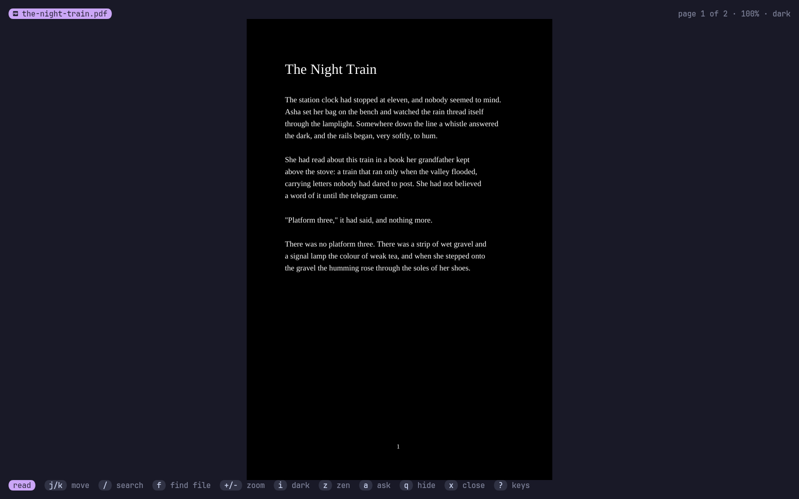
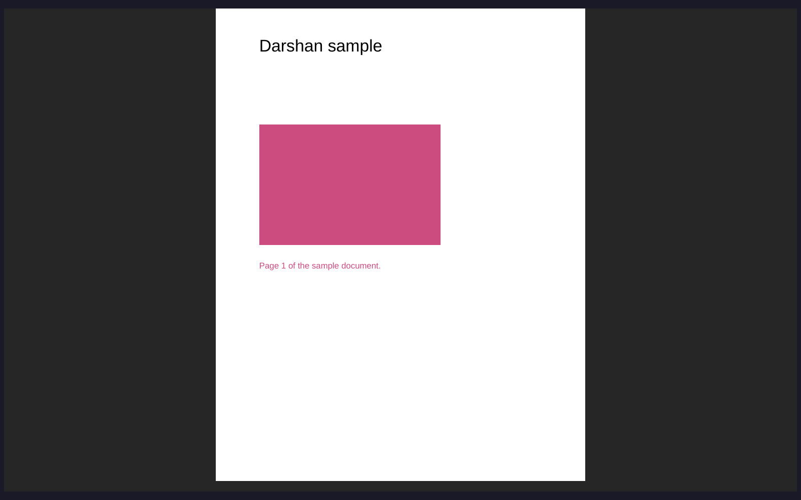

Darshan (दर्शन) is Sanskrit for "seeing": a view of something, taken in properly.
darshan opens in a tmux popup, inside your work. Close it and your file stays open, on the same page, until you say otherwise. Press one key and it fills the screen with nothing but the page. Ask an agent to show you a document and you can question it from right there: your question reaches the agent with the page you're on, and its answer shows beside the page.
#Features
- Real pages and pictures on kitty and Ghostty, inside tmux and its popups too; coloured blocks on other terminals. Markdown is drawn as styled text.
- Vim keys:
j k h l,gg G, counts (5j,12G),Ctrl+d/Ctrl+u,/withn/N,:for commands (a page number,q,bd,e FILE). - Search the whole system:
ffinds any PDF, image or Markdown file by name, with a live preview of the one you're on. Recent files come first. - The popup remembers:
prefix vopens it and closes it. Your file and page come back until you close the file withSpace b d. - Zen mode:
zswitches between the normal popup and the full screen with nothing but the page. - Dark mode:
Space u iinverts pages and pictures, for reading at night. - It follows the file: when a file changes, it reloads and keeps your page.
- AI agents: an MCP server lets any agent show you a file and talk about it.
#Install
curl -fsSL https://raw.githubusercontent.com/Theyashsawarkar/darshan/main/install.sh | bashOr make install, or with TPM: set -g @plugin 'Theyashsawarkar/darshan', which binds prefix v. It needs poppler (pdftoppm, pdfinfo, pdftotext) for PDFs and fd for the search; darshan doctor checks. tmux needs set -g allow-passthrough on only for other tools: darshan writes straight to the client's terminal.
To make it the desktop's viewer, install packaging/darshan.desktop and xdg-mime default darshan.desktop application/pdf image/png image/jpeg. darshan open FILE shows a file in the running screen, a tmux popup, or from the desktop a kitty window of its own.
For AI agents, install pranali too and run darshan service install (install.sh does it): every agent then shares one MCP server (see AI agents). make install puts the two systemd units in $PREFIX/lib/systemd/user; enable them with systemctl --user enable --now darshan-mcp.socket.
| Command | Does |
|---|---|
darshan [FILE] [-p N] | The screen, on FILE or what you left open |
darshan open FILE [-p N] | Show FILE from anywhere |
darshan popup | Open the tmux popup, or close it when it's open |
darshan search WORDS [--kind pdf] | Find files by name: one path a line |
darshan status | What's open |
darshan close | Close the open file |
darshan mcp | The MCP server, for AI agents (through pranali to the one darshan serve they share) |
darshan serve | The MCP server every agent shares, run by darshan.service |
darshan service install | Set up darshan-mcp.socket and darshan.service for you (systemd user units), or restart the server after an update; --dir DIR only writes them |
darshan service uninstall | Stop and remove them |
darshan doctor | Check what it needs |
#Keys
darshan uses the vim grammar every Vayu tool shares (vyakarana): on the page you are in NORMAL (keys are commands; a number repeats a motion: 5j, 12G), the finder, the / search and the talk are typing. Space is the leader: press it and a box lists what can follow (Space u toggles the view, Space b the file, Space o opens it elsewhere, Space k asks the agent). Space Space searches every action, ? shows every key. Inside the tmux popup its own key (@darshan-key, v by default) closes it, like pressing it again outside.
Space no longer pages down: Ctrl+f does. Keys that moved say where they went for one release: a → Space k, i → Space u i, w → Space u w, x → Space b d.
| Keys | What it does |
|---|---|
| j or Down | Move down (the next page once the page is all shown; 5j repeats) |
| k or Up | Move up (the previous page once the page is all shown) |
| h or Left | Move left when zoomed (else the previous page) |
| l or Right | Move right when zoomed (else the next page) |
| J or PgDn | Move to the next page |
| K or PgUp | Move to the previous page |
| Ctrl+d | Scroll half a screen down |
| Ctrl+u | Scroll half a screen up |
| Ctrl+f | Scroll a screen down (Space did this before it became the leader) |
| Ctrl+b | Scroll a screen up |
| g g or Home | Jump to the first page (5gg: page 5) |
| G or End | Jump to the last page (5G: page 5) |
| : or Space g p | Jump to a page (or line) by number: :12 (also :q, :bd, :e FILE) |
| / | Search the document's text |
| n | Jump to the next match |
| N | Jump to the previous match |
| + | Grow the zoom |
| - | Shrink the zoom |
| = | Reset to fit the whole page |
| [ or Space b p | Switch to the previous file in the folder |
| ] or Space b n | Switch to the next file in the folder |
| f or o or Ctrl+p or Space f f | Search for a file on the whole system (with a preview) |
| z or Space u z | Toggle zen mode: the full screen, nothing but the page |
| r or Space r | Reload the file (it also reloads by itself when it changes) |
| y or Space y p | Copy the file's path |
| ? or Space ? | Show every key |
| q or Space q | Close the popup; the file stays open for next time (the popup's own key too) |
| Space Space | Search every action and run one (the palette) |
| Space b | File… |
| Space b d | Close the file (the popup then finds another) |
| Space k | Open the talk with the agent that opened this file, to ask it something |
| Space o | Open… |
| Space o b | Open the file in the desktop's own viewer (xdg-open) |
| Space o e | Open the file in $EDITOR (Markdown) |
| Space u | Toggles… |
| Space u i | Invert the colours of pages and pictures (dark mode) |
| Space u w | Toggle fitting the page's width |
| While typing | |
| Enter | Run the search or the : command |
| Esc | Cancel the search or the : command |
The file finder
| Keys | What it does |
|---|---|
| Enter | Open the picked file |
| Tab or Shift+Tab | Switch between all files, PDFs, images and Markdown |
| While typing | |
| Ctrl+j or Down or Ctrl+n | Move to the next result while typing |
| Ctrl+k or Up or Ctrl+p | Move to the previous result while typing |
| Esc | Leave typing (NORMAL: j, k, g g, G, Ctrl+d / Ctrl+u move; i, a or / type again; Esc or q closes) |
The talk with the agent
| Keys | What it does |
|---|---|
| While typing | |
| Enter | Send your question, with what's on screen, to the agent |
| Esc | Close the talk |
#AI agents
Add it once and every agent can use it:
claude mcp add darshan -- darshan mcp| Tool | Does |
|---|---|
view_open | Show the user a file (path, page, why) |
view_search | Find files anywhere on the system by name |
view_status | What's open, the page, the text on their screen |
view_next_question | Wait for the user's next question |
view_reply | Show an answer beside the page |
view_close | Close the file |
Asking. When an agent opened the file, Space k opens the talk beside the page. Your question goes with the file, the page and the text on your screen: to the agent if it's waiting in view_next_question, else typed straight into its tmux pane, so it arrives like a message from you. If that pane has dropped to a shell darshan won't type there; the question waits until the agent next asks for it. The document's text is marked as data, so words inside a PDF can't pose as your instructions. If the agent regenerates the file, it reloads where you were.
One server for every agent. darshan mcp doesn't run a server of its own per agent: it hands over to pranali, a small pipe that carries the agent's MCP to one shared darshan serve on $XDG_RUNTIME_DIR/darshan/mcp.sock (without a runtime dir, ~/.local/state/darshan/run/mcp.sock; never /tmp). systemd owns it: darshan-mcp.socket listens, starts darshan.service on the first agent, and the server leaves after a minute with no agent, to start again on the next. Each agent keeps its own session: pranali's hello brings its folder, its tmux server and pane, its desktop and its PATH, so relative paths start in its folder, questions reach its pane and popups open on its tmux. The server runs each agent's commands (tmux, kitty) from that agent's PATH, and doesn't keep LD_PRELOAD, LD_LIBRARY_PATH or CLAUDE*, ANTHROPIC* and MCP_* variables from whoever started it.
An update restarts the server (darshan service install does, and kosha and install.sh run it): calls in flight get up to 20 seconds to finish, a view_next_question that is waiting ends at once with "call it again", and agents that connect meanwhile wait at the socket. pranali carries each session over to the new server without the agent reconnecting; a call cut off in the middle comes back as an error that says it may or may not have happened. A running server never steps down for a different build. Without pranali, or when no server can be reached at the start, darshan mcp serves in its own process as before and says so in one line on stderr. Pipes from darshan 0.2's own darshan mcp still reach the new server, until the agents that run them restart.
#Options
~/.config/darshan/config.toml:
roots = ["~/more-books"] # folders to search, beside home, other disks and system docs
exclude = ["archive"] # folder names to skip, beside node_modules, .git, .cache and the liketmux options, before TPM's run line:
| Option | Default | |
|---|---|---|
@darshan-key | v | The popup key after the prefix (none binds nothing) |
@darshan-width | 90% | Popup width |
@darshan-height | 88% | Popup height |
@darshan-title | darshan | Popup title |
@darshan-launcher | Your own popup command, given display-popup's arguments |
Colours follow varna when it's there.
#How it draws
PDF pages become PNGs through poppler's pdftoppm (cached in ~/.cache/darshan). They reach the terminal by kitty's graphics protocol, written to the tmux client's own terminal, and show through Unicode placeholders, which any text layout carries: that's why they work in popups, where viewers that draw directly (tdf, for one) show nothing.
Not yet: highlighting a match on a PDF page (/ jumps to the page), animated GIFs (the first frame shows), pictures inside Markdown.